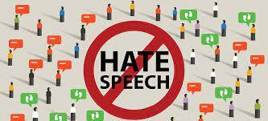

Informazione e libertà
Internet viene censurato applicando dei filtri che bloccano i contenuti considerati pericolosi, come quelli relativi a tematiche sociali, nonché notizie e opinioni riguardanti conflitti e sicurezza. Da uno studio che analizza il rapporto tra censura e Internet nei vari Paesi del mondo è emerso che i Paesi più “digitalmente repressivi” sono la Corea del Nord, la Cina, e a pari merito Russia, Iran e Turkmenistan.
Competenze digitali
Per essere dei buoni cittadini digitali bisogna:
- usare in modo responsabile e positivo le tecnologie offerte dal web; fare un uso corretto e attento dei social network, delle chat e di tutti i luoghi abitati dalla comunità virtuale;
- navigare in sicurezza e in modo autonomo, imparando a riconoscere le insidie di internet come le truffe o il furto di dati; proteggere la propria privacy e rispettare quella degli altri;
- avere sempre un comportamento civile, che non danneggi noi stessi e gli altri.
La "Costituzione" di internet
Nel 2015 una commissione di studio della Camera dei Deputati, la Commissione per i diritti e i doveri in Internet, ha redatto la Carta dei diritti di Internet, un documento che dà un fondamento costituzionale ai princìpi e ai diritti connessi alla dimensione virtuale e, in generale, alla nostra “vita online”.
Perché è importante la cybersecurity
L’importanza degli investimenti in cybersecurity per le aziende è senza dubbio evidente. Se pensiamo a tutti i rischi in cui possiamo imbatterci ogni giorno,
a partire dalla perdita del profilo Facebook, passando per l’hackeraggio del conto online e concludendo con problematiche legate a servizi sanitari
e amministrativi, ci rendiamo conto che l’unico modo che abbiamo per proteggere i nostri dati sensibili e personali è la sicurezza informatica.
Nel contesto contemporaneo, infatti, ogni azienda che opera sul web e che ha a disposizione dati personali dei suoi utenti deve investire nella cybersecurity
e nei processi di protezione in generale proprio per tutelare gli utenti e difenderli dalle diverse tipologie di minacce cyber.
La cyber security per le aziende sono di vitale importanza, secondo le stime dell’osservatorio cybersecurity e data protection del politecnico di Milano stima che nel 2019
l’investimento nella cybersecurity abbia superato i 1,3 miliardi di euro. Per le aziende la cybersecurity è importante perché li aiuta a proteggersi da furti di dati o denaro
che potrebbero risultare gravi perdite dell'azienda stessa. Inoltre per i cittadini comuni è importante perché’ protegge i conti in banca, le chat e qualsiasi cosa che si colleghi ad internet.
-
Cybercrimine
Si caratterizza nell'abuso della tecnologia informatica sia hardware che software. Alcuni crimini in particolare sono finalizzati allo sfruttamento commerciale della rete Internet, a porre a rischio i sistemi informativi di sicurezza nazionale.
-

Cyberattacchi
Un attacco informatico è un tentativo malevolo e intenzionale da parte di un individuo o di un'organizzazione di violare il sistema informativo di un altro individuo o azienda. Di solito, l'hacker viola la rete della vittima per ottenere qualche tipo di vantaggio.
-
Cyberterrorismo
Indica l’utilizzo del cyberspazio (Internet) per fini terroristici, ovvero, diffondere la paura e il panico nella popolazione destabilizzando l’ordine e la sicurezza pubblica, per ragioni politiche, ideologiche o religiose. Il cyber terrorismo si manifesta con due attività prevalenti: propaganda e attività diretta.
L'importanza delle minacce informatiche
A livello globale, le minacce informatiche continuano a evolversi rapidamente e il numero di data breach aumenta ogni anno. Da un report di RiskBased Security emerge che, solo nel 2019, ben 7,9 miliardi di record sono stati esposti a data breach, più del doppio (112%) del numero dei record esposti nello stesso periodo del 2018.
La maggior parte delle violazioni, imputabili a criminali malintenzionati, ha colpito servizi medici, rivenditori ed enti pubblici. Alcuni di questi settori sono particolarmente interessanti per i cybercriminali, che raccolgono dati medici e finanziari, ma tutte le aziende connesse in rete possono essere colpite da violazioni dei dati, spionaggio aziendale o attacchi ai clienti.
Visto il continuo aumento della portata delle minacce informatiche, International Data Corporation prevede che, entro il 2022, la spesa mondiale in soluzioni di Cybersecurity arriverà a ben 133,7 miliardi di dollari. I governi di tutto il mondo hanno risposto a questo aumento delle minacce informatiche pubblicando indicazioni per aiutare le aziende a implementare procedure di Cybersecurity efficaci.
Negli Stati Uniti, il National Institute of Standards and Technology (NIST) ha creato un framework di Cybersecurity. Per contrastare la proliferazione del codice malevolo e agevolarne l'individuazione precoce, questo framework raccomanda il monitoraggio continuo e in tempo reale di tutte le risorse elettroniche.
L'importanza del monitoraggio dei sistemi è ribadita anche nel documento "10 steps to cyber security" fornito dal National Cyber Security Centre del governo britannico. In Australia, il Australian Cyber Security Centre (ACSC) pubblica regolarmente indicazioni per contrastare le nuove minacce alla Cybersecurity all'interno delle aziende.
Consigli su come proteggersi dai cyberattacchi
- Aggiornare il software e il sistema operativo: questo permette di sfruttare le patch di sicurezza più recenti.
- Utilizzare software antivirus: alcuni antivirus sono in grado di rilevare e rimuovere le minacce. Il software deve essere aggiornato regolarmente per garantire il massimo livello di protezione.
- Utilizzare password complesse: assicuratevi di utilizzare password difficili da indovinare.
- Non aprire allegati e-mail di mittenti sconosciuti: potrebbero essere infettati dal malware.
- Non fare clic sui link contenuti nei messaggi e-mail di mittenti sconosciuti o in siti web non familiari: è un metodo comune per diffondere il malware
- Evitare di utilizzare reti Wi-Fi non protette negli spazi pubblici: le reti pubbliche espongono i dispositivi agli attacchi Man-in-the-Middle.